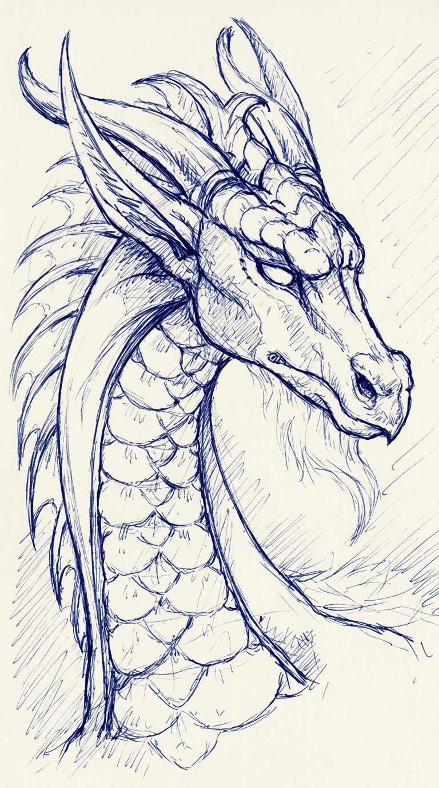
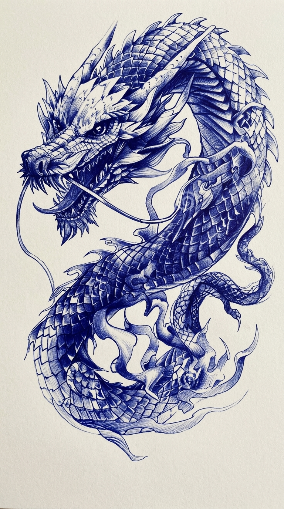

Drawing 01follow the little lines ↘


Take a closer look ↗The horned dragon
A quiet gaze. A tangle of horns and little lines.
Selected drawings / blue ink
Take your time.
There’s a story in every line.

Take a closer look ↗A quiet gaze. A tangle of horns and little lines.

Take a closer look ↗Scales, curls, and a creature that won’t sit still.